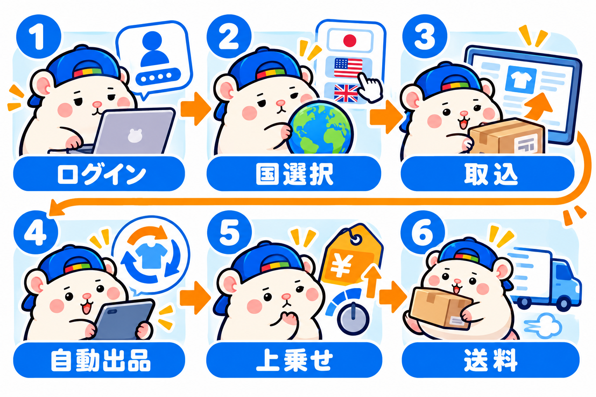
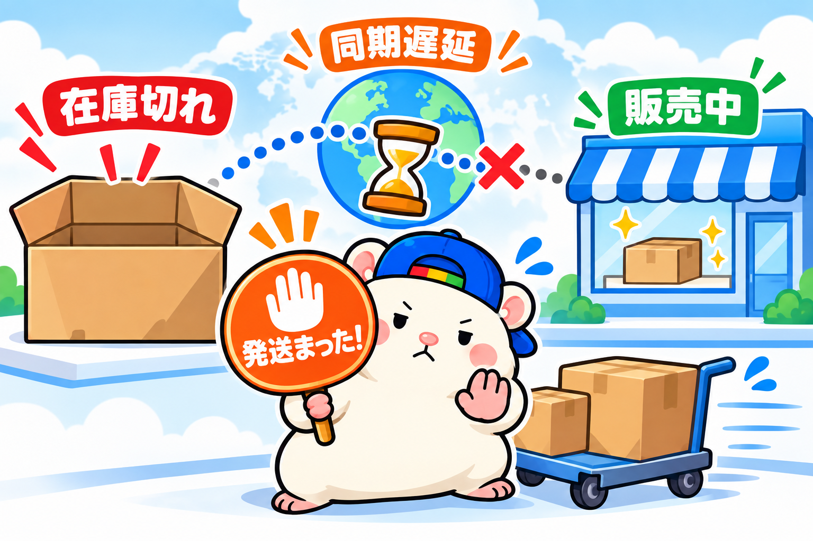

eBaymag(イーベイマグ)の注文が、7%→10%→20%と増えてきました。
7月から本格的に始めたeBayの店も、2カ月半。
アメリカ以外の国のページで売れる割合が、月ごとに上がっています。
- 7月 28件中2件(7%)
- 8月 30件中3件(10%)
- 9月 10件中2件(20%) ※9月11日まで
母数は、まだ小さいですが、割合だけでなく、件数そのものも増えています。
eBaymagは、eBayの公式ツールです。
うちは全部の出品をこれに取り込んで、7つの国のeBayにも出しています。
今日は、使い方と設定、それから、いま気をつけることを書きます。
うちの店の使い方
使い方は、ひとことで言うと「全部オン」です。
- アメリカで出した商品を、ぜんぶeBaymagに取り込む
- 新しく出した商品も、自動で取り込む
- 出す国は、選べる7カ国すべて(イギリス、ドイツ、フランス、イタリア、スペイン、カナダ、オーストラリア)
7月9日に、まず4カ国へ一気に展開しました。
いまは7カ国に出ています。
ぼくがやったのは、最初の設定だけ。
あとは出品担当がアメリカに1件出すたびに、同じ商品が各国のページにも出ていきます。
全展開から1週間で、オーストラリアから1件目の注文が来ました。
これまでに売れたのは、5つの国のページ。
オーストラリアで3件、ドイツ・スペイン・フランス・イギリスで1件ずつです。
8月は、注文の43%がアメリカ以外の国からでした。
英語のページのまま買う人も多いんです。
そこに、その国のことばのページを足すのがeBaymagです。
そもそもeBaymagとは
eBayが出している、多国展開のための公式ツールです。
ここ、勘違いされやすいので、先にたとえ話をします。
Amazonで考えると、わかりやすいです。
日本の人は、ふだんAmazon.co.jpで買い物しますよね。
日本語で、円の値段で。
アメリカのAmazon.comでも買えるけど、わざわざそっちで探す人は少ないはずです。
eBayも同じで、国ごとに「その国のeBay」があります。
- アメリカ … ebay.com
- イギリス … ebay.co.uk
- ドイツ … ebay.de
- フランス … ebay.fr
- イタリア … ebay.it
- スペイン … ebay.es
- カナダ … ebay.ca
- オーストラリア … ebay.com.au
ぼくの店の本体は、アメリカのebay.comです。
ここに出した商品は、海外の人も買えます。
8月にアメリカ以外から入った13件のうち、10件はebay.comの出品でした。
eBaymagは、その同じ商品を、ほかの7つの国のeBayにも出すツールです。
ドイツならebay.deに、ドイツ語とユーロで。
日本でいえば、Amazon.comで売っていた商品を、Amazon.co.jpにも日本語と円で出すようなものです。
だから「7カ国に出している」は、「7カ国にしか売っていない」ではありません。
ebay.comで海外にも売りつつ、7つの国では、その国のeBayにも出している、ということです。
もうひとつ、混ざりやすい話があります。
配送のビジネスポリシーにある「配送除外国」は、どの国には届けないかを決める設定。
eBaymagは、どの国のeBayに出すかを決めるツール。
どちらも「国」の話ですが、まったく別ものです。
eBaymagでできることは、こんな感じです。
- 最大8つのeBay(アメリカ+さっきの7カ国)に、まとめて出品できる
- タイトルと説明文は自動で翻訳
- 値段は、その国の通貨に自動で換算
- 在庫と価格は、元の出品と自動で同期
- ツールの利用料は無料
出品手数料も、日本のセラー限定のキャンペーンで、条件を満たせば無料です。
対象は、オーストラリアをのぞく6カ国。
オーストラリアは、もともと出品手数料が基本無料です。
条件は、固定価格の出品であること、成績が基準以下(Below Standard)でないこと、など。
売れたときの落札手数料は、ふつうにかかります。
うちも8月に請求を調べましたが、他の国に出した分の出品手数料は0件でした。
登録・設定のしかた

手順は、公式のFAQのとおりです。
- eBaymagのサイトで「Sign in via eBay」を押し、eBayのアカウントでログイン
- 「Sites」で、出したい国を選ぶ
- 「Items」から、出品中の商品を取り込む(Import)
- 「Settings」で、取り込んだ商品を自動で出品する設定をオン
- 国ごとに、値段の上乗せ(%)を決める
- 送料の設定は、eBayのビジネスポリシーから選ぶ
うちの上乗せは、最初こうしました。
イギリスとドイツは+3%、オーストラリアは+5%、カナダは±0。
カギは、4番の自動出品です。
これをオンにしておけば、アメリカで出した商品が、あとから自動で各国に出ます。
リミットが余っているなら、使い切る
eBayには「リミット」があります。
1カ月に出品・販売できる数と金額の上限です。
eBaymagで他の国に出した分も、このリミットに数えられます(eBaymagのヘルプより)。
もうひとつ、国ごとに出品手数料がかからない「無料の枠」もあります。
eBaymagには、この枠を超えたとき、お金を払ってでも出すかを決めるスイッチがあります。
うちは「無料の枠の中だけで出す」設定です。
枠を超えた分は出ないので、出品手数料はかかりません。
同じ商品を、手間も出品手数料もかけずに、8つの売り場に出せる。
リミットが余っているなら、使わない理由がありません。
うちはリミットに十分な余裕があるので、すべての出品を対象にしています。
注意: いま、在庫の同期がずれることがある

9月に入って、eBay Japanから、eBaymagの大事なお知らせが3通届きました。
eBaymagはいま、新しいシステムへ引っ越し中です。
すべてのアカウントの移行が終わるのは、9月15日の予定。
その影響で8月24日から、一部のセラーでこんなことが起きました。
- 元の出品で変えた在庫や値段が、他の国のページに反映されない(遅れる)
- 在庫切れの商品が、他の国ではまだ「販売中」のまま
ふだんは20分以内に同期されるのに、それが遅れていたんです。
無在庫の店には、これが何よりこわい。
仕入れられない商品に、注文が入ってしまうからです。
これが原因の注文は、9月10日の案内でこうなりました。
- 対象は、8月24日から9月30日までに入った注文
- キャンセルするときは、理由を「Out of stock(在庫切れ)」にする
- それでついたディフェクト(店の成績の減点)や悪い評価は、eBayが自動で消してくれる。申請はいらない
- 消える時期は、8月分が9月20日、9月分が10月20日のアカウント評価の前
- 評価が決まったあとに悪い評価がついたときだけ、サポートに連絡する
この案内は、10日で3回変わりました。
9月1日「発送せず、キャンセルの前にサポートへ連絡」
9月7日「対象は9月2日まで。ディフェクトは連絡なしで保護」
9月10日「対象を9月30日まで延長。悪い評価も自動で保護」
古い案内のまま動くと、しなくていい手間が増えます。
かならず、いちばん新しいメールで確かめてください。
うちでは在庫監視担当が、注文が入るたびにチェックしています。
「在庫切れのはずの商品じゃないか」「値段が、いまの価格と1割以上ずれていないか」。
あやしければ「発送まった」と、ぼくに知らせてくれます。
翻訳されると、ルール違反に読まれる文がある
eBaymagは、説明文を各国のことばに自動で翻訳します。
訳された文も、eBayの自動チェックの対象です。
eBayには「eBayの外で取引してはいけない」というルールがあります。
買い手に、eBay以外の相手へお金を払わせるような文もNGです。
気をつけたいのが、海外向けによく書く関税の注意書き。
「関税や税金は、買い手が自分の国の税関に払うものです」という一文です。
中身はただの説明でも、「eBay以外の相手(税関)にお金を払わせる文」と読まれることがあります。
すると、「eBayの外で取引しようとしている」と判定されてしまいます。
やっかいなのは、英語では通る言い方に直しても、訳されたあとの文でまた引っかかること。
実際、この注意書きが入った出品が、イタリア・ドイツ・スペインのeBayで44件、検索に出なくなったことがあります。
訳されたあとの文を、国ごとに確かめるのは現実的ではありません。
他の国にも出す出品では、払う相手や連絡する相手がeBay以外に見える文は、最初から書かないのが安全です。
まとめ
- eBaymagは公式ツール。利用料は無料、出品手数料も条件つきで無料
- 全部取り込んで自動出品をオンにすれば、あとは自動で各国に出る
- eBaymag経由の注文は7%→10%→20%。母数は小さいけど増えている
- リミットが余っているなら、使い切ったほうがいい
- いまは同期がずれることがある。それが原因でキャンセルするなら、理由は「在庫切れ」(8/24〜9/30の注文)
台帳に書いておこう。
「売り場は増やせるだけ増やす。お知らせは最新版で読む」
あなたの店のリミット、どれくらい余っていますか?
まずはSeller Hubで、自分のリミットを見てみてください。
▼中の人🏠(レンタルスペース23部屋・売上1.5億)のレンスペ実録
https://note.com/rentalspace_kiku
▼ブログ(eBay×レンスペ、全記事まとめ)
https://rental-space.net
▼この店のやり方は、ぜんぶ1冊にまとめてあります
リサーチ・出品・値付け・顧客対応まで、初月利益18万6,673円を出した実店舗の記録と手順を全部書いた教科書です。
読んだその日から、AI社員の作り方をそのまま真似できます。
『AI × eBay輸出の教科書 — 梱包以外、ぜんぶAI』(公式サイト最安 ¥8,800)
https://rental-space.net/kyokasho/ebay/
※先行5部限定の価格です。以降、2,000円ずつ値上げします。